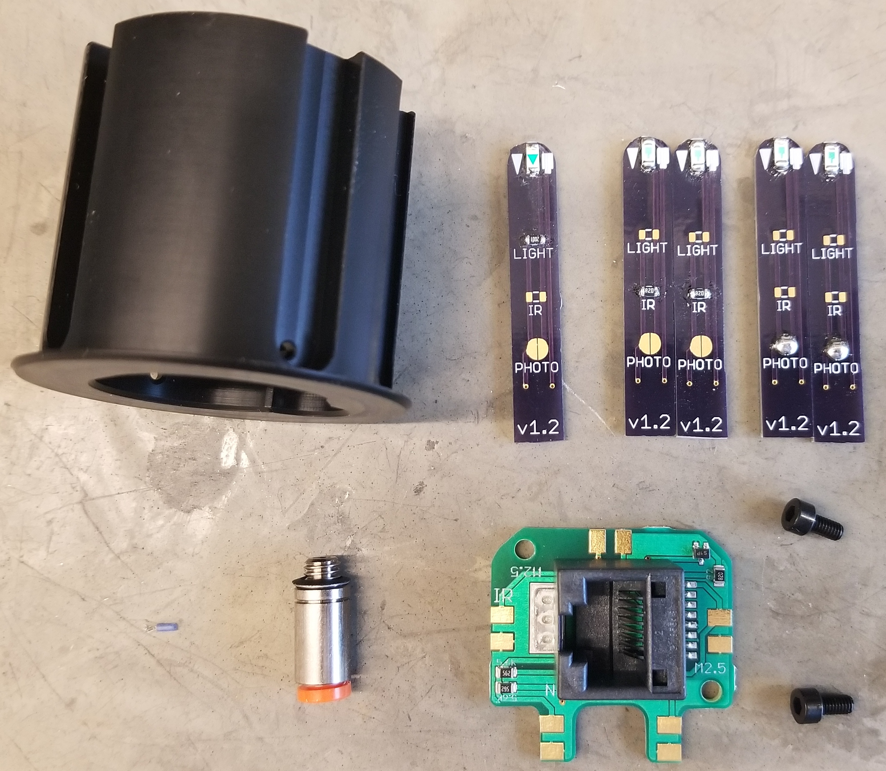

Build Instructions¶
CAD Files¶
RJ45 Pinout¶
| RJ45 Pin | Description | Direction |
|---|---|---|
| 1 | Nose Beam Break | Output |
| 2 | ||
| 3 | White LED | Input |
| 4 | ||
| 5 | Ground | |
| 6 | ||
| 7 | 3.3 Volts | |
| 8 | Lick Beam Break | Output |
Bill of Materials¶
| QTY | Description | Price | Part Number | Supplier |
|---|---|---|---|---|
| 1 | Backside PCB | 2.3 | Nosepoke v 1.12 | OSH Park |
| 5 | Outer PCB | 3.25 | Emitter/Detector v1.2 | |
| 1 | 1/8” Push-to-connect fitting | 2.81 | 7880t137 | McMaster-Carr |
| 2 | 5mm long M2.5 x .45 screw | 0.64 | 91290A100 | |
| 1 | NPN transistor | 0.31 | FJX2222ATFCT-ND | Digi-Key |
| 1 | Verictal SMD RJ45 Jack | 1.33 | WM3553CT-ND | |
| 1 | White LED | 0.72 | 1080-1593-1-ND | |
| 2 | IR Emitter | 0.38 | 1080-1357-1-ND | |
| 2 | Phototransistor | 0.4 | 1080-1386-1-ND | |
| 2 | 5.6 kΩ Resistor (0805) | |||
| 4 | 82 Ω Resistor (0805) |
Assembly¶
Required Tools¶
- 2mm hex key or screwdriver
- Soldering iron
Instructions¶
Solder components onto backside PCB
Secure backside PCB to the back of the nosepoke using two M2.5 screws
- Solder components onto the outer PCBs
- One board with 82 Ω and white LED
- Two boards with 82 Ω and IR emitter LED
- Two boards with solder jumper closed and phototransistor
Place the outer PCBs in the channels of the nosepoke. The IR emitters go on the left side, the light goes on top and the phototransistors go on the right side.
Add solder at the joints of the PCBs to create both an electrical and mechanical connections.
Using a 2mm hex driver, screw in the push-to-connect fitting.

{kind=link}
{kind=link}
{kind=link}
{kind=link}
{kind=link}
{kind=link}